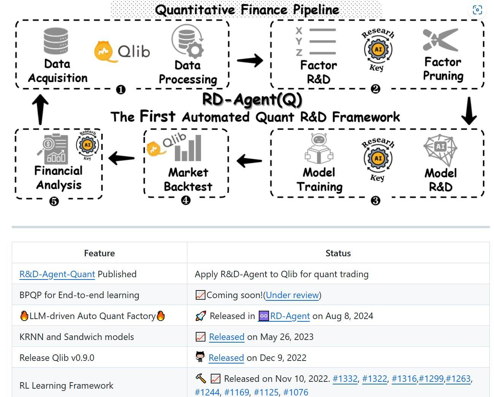
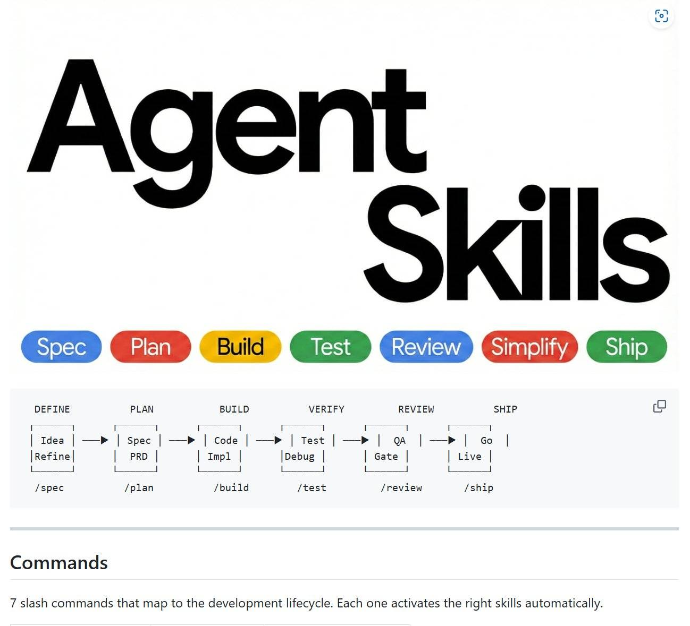

DICTATOR PROFILE
萨帕尔穆拉特·尼亚佐夫
Saparmurat Niyazov · 土库曼斯坦首任总统
1940-02-19 — 2006-12-21 · 执政 1990–2006
Biography
土库曼斯坦首任总统（1990–2006），执政16年，以极端个人崇拜和政策荒诞闻名。
苏联解体后掌权，在能源丰富的土库曼斯坦建立了堪比朝鲜的个人崇拜体系。
2006年因心脏病突发去世，遗体安葬于阿什哈巴德的土耳其巴什·鲁赫清真寺。
"土库曼斯坦只有在我在场时才算有人管理。"
— 尼亚佐夫，广播讲话
核心数据
执政时长16年
金色雕像数14000+
鲁纳玛印数150万+
禁止词汇量数十个
来源：BBC / 土耳其纪事报 / 自由欧洲电台
奇葩禁令清单
禁
禁用"十亿"（milliard）
土库曼语中"十亿"（milliard）与他的姓氏发音相近，被宣布为禁用词。违者受罚。
禁
禁用"口腔"（oguz）
"oguz"意为"口腔"，发音类似他的中间名"吐尔汗"（Türkmenbaşy），同样被禁用。
禁
禁止假唱（2005年法律）
2005年颁布法律禁止歌手假唱，以"保护土库曼斯坦的音乐文化"——连他本人不唱的颂歌也适用。
禁
取消芭蕾舞和 opera
以"不符合土库曼斯坦传统"为由，将全国芭蕾舞团和剧院全部关闭，歌剧演出被全面禁止。
神
鲁纳玛（Ruhnama）必读
他撰写的《鲁纳玛》（灵魂之书）被列为学校必修教材及公务员考试必考内容，不读此书不得毕业或就业。
神
旋转金色雕像
在阿什哈巴德竖立巨大金色雕像，安装GPS和光学传感器，确保雕像永远"面向太阳"，象征他永远注视着人民。
神
月份改名
将土库曼月份名称改为他母亲、祖母及亲信的名字。例如"一月"改为"Gurbansoltan"（其母名）。
神
三代亲属信息表（uch arkamalat）
要求公民每2-3个月提供三代以内亲属的详细信息，包括已故亲属的埋葬地点，连死人也要"汇报"。
个人崇拜体系
无处不在的画像
全国所有公共场所、办公室、教室必须悬挂他的巨幅肖像。拒绝悬挂者面临解雇或处罚。
14000座金色雕像
在全国各地竖立超过14000座他的镀金雕像，总花费无法估算。首都阿什哈巴德遍地金色身影。
自称"土耳其巴什"
"Türkmenbaşy"意为"全体土库曼人之父"。他在护照上将自己改名为"土库曼巴希"，并要求全民以此称呼。
地名全改
以他母亲"古尔班索尔坦"命名的城市、湖泊、街道遍布全国，城市名改为"土库曼巴希"。
教科书审查
所有学校课本须经他亲自批准。物理课中出现"牛顿"等外国人名，需用"土库曼科学家"替换。
出生证明改日期
将自己的生日（2月19日）定为全国假日"感恩日"。并宣布此日也是土库曼斯坦的"独立日"。
参考图例

图1：量化金融流水线 · RD-Agent(Q)

图2：Agent Skills 开发流程
注：以上两图为用户提供参考图，用于信息卡风格示例。
Timeline
1940
出生于土库曼苏维埃社会主义共和国阿什哈巴德
1990
被任命为土库曼斯坦总统，开始长达16年的统治
1995
宣布土库曼斯坦为永久中立国，获联合国承认
2001
将月份名称改为亲属名字，开始大规模改名运动
2005
颁布禁止假唱法律；关闭全国芭蕾舞团和剧院
2006-12-21
因心脏病突发于阿什哈巴德去世，享年66岁
死后评价与遗留
继承者
其副手库尔班古力·别尔德穆哈梅多夫（Berdymukhamedov）接任总统，并同样建立了个人崇拜体系。
遗留政策
三代亲属信息表（uch arkamalat）延续至今；鲁纳玛仍为学校教材；金色雕像大多得以保留。
"尼亚佐夫建造了一个凡人为神的系统——每个土库曼人在睡梦中都在接受他的注视。"
— 自由欧洲电台评述，2006年
SOURCE & REFERENCE